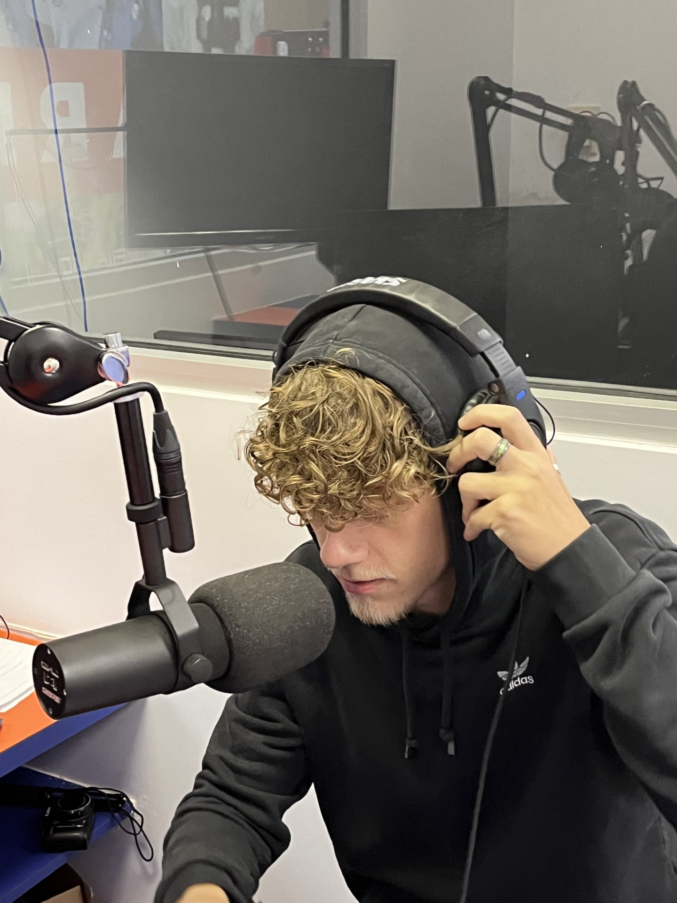
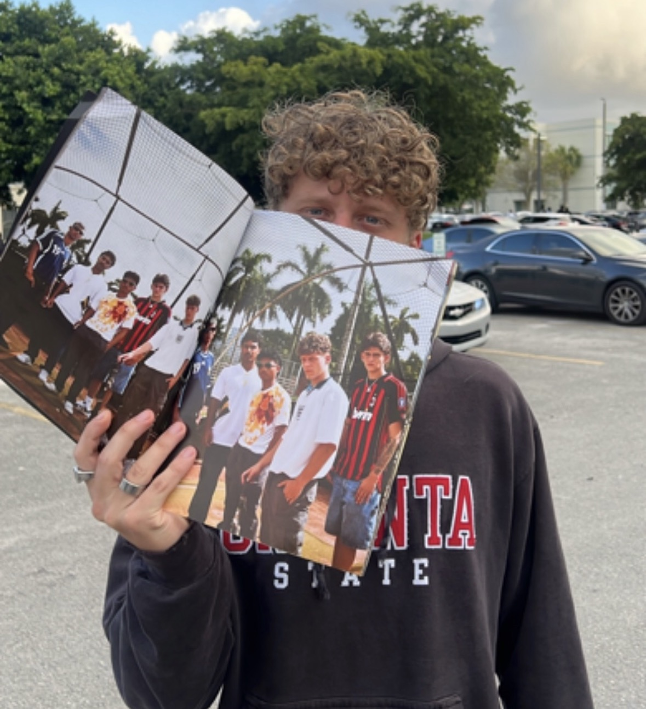
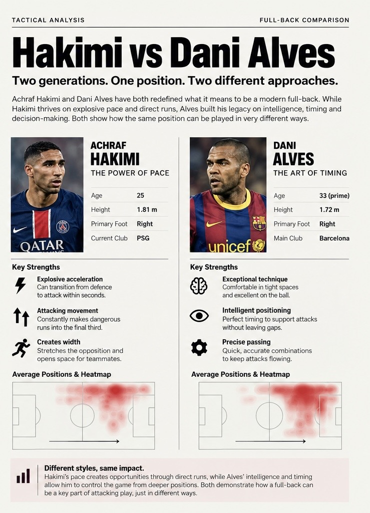
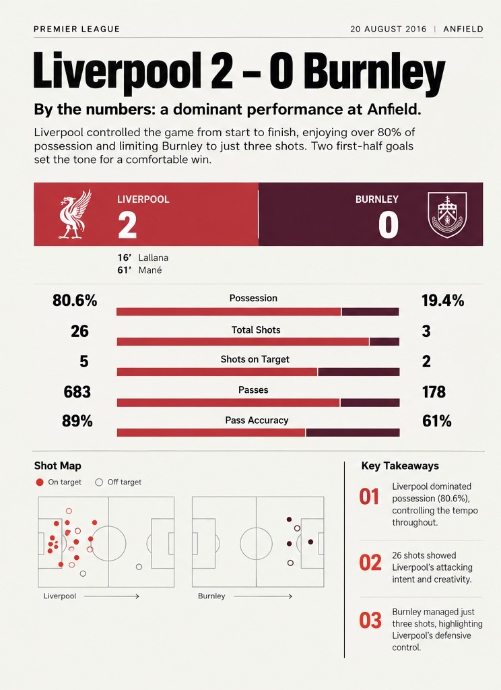

Media / Sport / Creative work
Thomas
Bailey.
A three-year international scholarship recipient with experience in sports media, podcast production and editorial design.
Scroll to explore my work. You control the pace—scroll slowly to look closer, or faster to move ahead.

Audio / Production
Behind the
conversation.
From operating the soundboard to editing audio and contributing on mic: my work with the Lions Country Podcast at Florida Memorial University.
View photograph ↗
Lions Country Podcast
A platform
for voices.
Conversations, interviews and perspectives from the Florida Memorial University community.
View project poster ↗
Episode spotlight
Dear
My HBCU.
An episode from Lions Country Podcast, bringing another perspective to the university conversation.
View episode artwork ↗Photography / Print
From an idea
to a printed page.
A student photography magazine created collaboratively with fellow students. A chance to bring photographs, layout and storytelling together in print.
View photograph ↗
Football / Visual storytelling
One position.
Different styles.
A full-back comparison concept exploring how typography, player imagery and pitch graphics can make football analysis easier to follow.
Open full design ↗
Information / Design
Making the
numbers visual.
A football statistics layout concept, combining charts, a shot map and a clear reading order. Presented as a design study.
Open full design ↗
The next chapter
More to make.
More to share.
Explore my full portfolio for more projects, interviews and the experience behind the work—or get in touch.